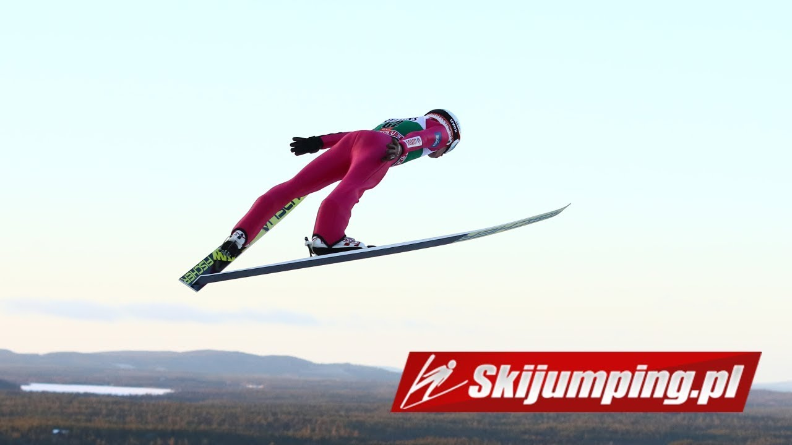

Polscy Skoczkowie
Adam Małysz
Kamil Stoch
Dawid Kubacki
Piotr Żyła
Maciej Kot
Wojciech Fortuna
MiniGame
Strona opisuje polskich skoczków wszechczasów!
Kliknij, aby móc obejrzeć filmy!
Więcej o skokach...
